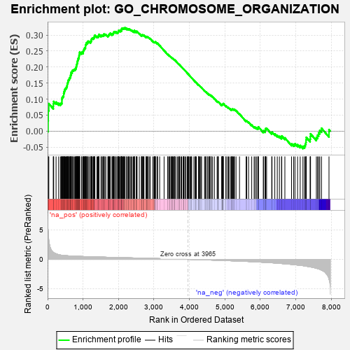

| | | Dataset | 7d |
| Phenotype | NoPhenotypeAvailable |
| Upregulated in class | na_pos |
| GeneSet | GO_CHROMOSOME_ORGANIZATION |
| Enrichment Score (ES) | 0.322707 |
| Normalized Enrichment Score (NES) | 1.561632 |
| Nominal p-value | 0.0 |
| FDR q-value | 0.2579487 |
| FWER p-Value | 1.0 |
Table: GSEA Results Summary

Fig 1: Enrichment plot: GO_CHROMOSOME_ORGANIZATION
Profile of the Running ES Score & Positions of GeneSet Members on the Rank Ordered List
| PROBE | GENE SYMBOL | GENE_TITLE | RANK IN GENE LIST | RANK METRIC SCORE | RUNNING ES | CORE ENRICHMENT | | 1 | H2BE1 | | | 16 | 4.938 | 0.0320 | Yes |
| 2 | H2AX | | | 20 | 4.738 | 0.0644 | Yes |
| 3 | SPO11 | | | 35 | 3.371 | 0.0859 | Yes |
| 4 | SPI1 | | | 162 | 1.182 | 0.0776 | Yes |
| 5 | TEX14 | | | 164 | 1.179 | 0.0856 | Yes |
| 6 | BUB3 | | | 172 | 1.143 | 0.0926 | Yes |
| 7 | CDC45 | | | 239 | 0.950 | 0.0905 | Yes |
| 8 | ELOF1 | | | 312 | 0.802 | 0.0866 | Yes |
| 9 | HUS1 | | | 362 | 0.735 | 0.0853 | Yes |
| 10 | AXIN2 | | | 383 | 0.713 | 0.0876 | Yes |
| 11 | RRP8 | | | 403 | 0.699 | 0.0899 | Yes |
| 12 | H2AJ | | | 404 | 0.697 | 0.0947 | Yes |
| 13 | NBN | | | 405 | 0.696 | 0.0996 | Yes |
| 14 | EED | | | 409 | 0.690 | 0.1039 | Yes |
| 15 | MLH1 | | | 423 | 0.679 | 0.1069 | Yes |
| 16 | CENPS | | | 439 | 0.666 | 0.1096 | Yes |
| 17 | ERCC1 | | | 453 | 0.660 | 0.1124 | Yes |
| 18 | HAT1 | | | 454 | 0.659 | 0.1170 | Yes |
| 19 | LEO1 | | | 463 | 0.655 | 0.1205 | Yes |
| 20 | WRN | | | 469 | 0.649 | 0.1243 | Yes |
| 21 | CDC20 | | | 480 | 0.644 | 0.1274 | Yes |
| 22 | RFC2 | | | 488 | 0.635 | 0.1309 | Yes |
| 23 | MYOD1 | | | 504 | 0.628 | 0.1333 | Yes |
| 24 | KIF23 | | | 522 | 0.622 | 0.1354 | Yes |
| 25 | PKN1 | | | 535 | 0.619 | 0.1381 | Yes |
| 26 | MCM2 | | | 546 | 0.614 | 0.1410 | Yes |
| 27 | JMJD6 | | | 553 | 0.613 | 0.1444 | Yes |
| 28 | YLPM1 | | | 556 | 0.611 | 0.1484 | Yes |
| 29 | HIRA | | | 568 | 0.608 | 0.1512 | Yes |
| 30 | APEX1 | | | 577 | 0.604 | 0.1543 | Yes |
| 31 | CCNB1 | | | 581 | 0.601 | 0.1581 | Yes |
| 32 | RBL2 | | | 593 | 0.596 | 0.1607 | Yes |
| 33 | MCM7 | | | 612 | 0.591 | 0.1625 | Yes |
| 34 | NDC80 | | | 616 | 0.590 | 0.1662 | Yes |
| 35 | AURKC | | | 633 | 0.583 | 0.1681 | Yes |
| 36 | MCM8 | | | 646 | 0.578 | 0.1705 | Yes |
| 37 | NOC2L | | | 647 | 0.578 | 0.1745 | Yes |
| 38 | PARN | | | 660 | 0.572 | 0.1769 | Yes |
| 39 | RFC3 | | | 663 | 0.571 | 0.1806 | Yes |
| 40 | SMC2 | | | 667 | 0.570 | 0.1841 | Yes |
| 41 | MRE11 | | | 693 | 0.560 | 0.1847 | Yes |
| 42 | XRCC6 | | | 694 | 0.560 | 0.1886 | Yes |
| 43 | CDC6 | | | 709 | 0.557 | 0.1906 | Yes |
| 44 | WDR61 | | | 734 | 0.549 | 0.1913 | Yes |
| 45 | SETD3 | | | 754 | 0.544 | 0.1925 | Yes |
| 46 | RAD21 | | | 779 | 0.538 | 0.1931 | Yes |
| 47 | RERE | | | 787 | 0.536 | 0.1959 | Yes |
| 48 | BLM | | | 804 | 0.531 | 0.1975 | Yes |
| 49 | GAR1 | | | 806 | 0.530 | 0.2010 | Yes |
| 50 | RFC4 | | | 815 | 0.528 | 0.2036 | Yes |
| 51 | RPA1 | | | 817 | 0.527 | 0.2071 | Yes |
| 52 | RAE1 | | | 827 | 0.524 | 0.2096 | Yes |
| 53 | PHF10 | | | 834 | 0.523 | 0.2124 | Yes |
| 54 | SGF29 | | | 840 | 0.521 | 0.2154 | Yes |
| 55 | RFWD3 | | | 843 | 0.521 | 0.2187 | Yes |
| 56 | RPA2 | | | 851 | 0.519 | 0.2214 | Yes |
| 57 | BAZ1B | | | 861 | 0.516 | 0.2238 | Yes |
| 58 | ASF1B | | | 863 | 0.515 | 0.2272 | Yes |
| 59 | HDAC8 | | | 881 | 0.510 | 0.2285 | Yes |
| 60 | PARG | | | 884 | 0.509 | 0.2318 | Yes |
| 61 | POGZ | | | 887 | 0.509 | 0.2350 | Yes |
| 62 | HMGB2 | | | 892 | 0.507 | 0.2380 | Yes |
| 63 | HDAC5 | | | 900 | 0.506 | 0.2406 | Yes |
| 64 | HCFC1 | | | 902 | 0.506 | 0.2439 | Yes |
| 65 | NHP2 | | | 906 | 0.505 | 0.2470 | Yes |
| 66 | TOP3B | | | 960 | 0.493 | 0.2435 | Yes |
| 67 | CTR9 | | | 964 | 0.492 | 0.2465 | Yes |
| 68 | MEN1 | | | 1003 | 0.483 | 0.2449 | Yes |
| 69 | TELO2 | | | 1006 | 0.482 | 0.2479 | Yes |
| 70 | HMGB4 | | | 1008 | 0.482 | 0.2511 | Yes |
| 71 | PSMG2 | | | 1018 | 0.480 | 0.2533 | Yes |
| 72 | REC8 | | | 1028 | 0.478 | 0.2554 | Yes |
| 73 | ING3 | | | 1039 | 0.476 | 0.2574 | Yes |
| 74 | TAF9 | | | 1046 | 0.475 | 0.2599 | Yes |
| 75 | WDR70 | | | 1066 | 0.470 | 0.2606 | Yes |
| 76 | STAG2 | | | 1069 | 0.470 | 0.2636 | Yes |
| 77 | XPA | | | 1070 | 0.469 | 0.2669 | Yes |
| 78 | AIFM1 | | | 1072 | 0.469 | 0.2700 | Yes |
| 79 | DEK | | | 1088 | 0.466 | 0.2712 | Yes |
| 80 | RAD51 | | | 1090 | 0.466 | 0.2743 | Yes |
| 81 | BRD8 | | | 1101 | 0.463 | 0.2762 | Yes |
| 82 | SRC | | | 1128 | 0.459 | 0.2760 | Yes |
| 83 | KMT2A | | | 1130 | 0.458 | 0.2790 | Yes |
| 84 | MCM3 | | | 1142 | 0.456 | 0.2807 | Yes |
| 85 | ERCC3 | | | 1173 | 0.451 | 0.2799 | Yes |
| 86 | RCOR1 | | | 1211 | 0.445 | 0.2781 | Yes |
| 87 | RBBP7 | | | 1220 | 0.443 | 0.2802 | Yes |
| 88 | KAT8 | | | 1231 | 0.442 | 0.2819 | Yes |
| 89 | CHD3 | | | 1232 | 0.442 | 0.2850 | Yes |
| 90 | KAT7 | | | 1240 | 0.440 | 0.2871 | Yes |
| 91 | KDM7A | | | 1248 | 0.439 | 0.2892 | Yes |
| 92 | CDC73 | | | 1265 | 0.436 | 0.2901 | Yes |
| 93 | DKC1 | | | 1292 | 0.431 | 0.2897 | Yes |
| 94 | SCMH1 | | | 1300 | 0.428 | 0.2917 | Yes |
| 95 | AEBP2 | | | 1315 | 0.426 | 0.2928 | Yes |
| 96 | NRDE2 | | | 1320 | 0.425 | 0.2953 | Yes |
| 97 | SSRP1 | | | 1323 | 0.424 | 0.2979 | Yes |
| 98 | UBR2 | | | 1334 | 0.423 | 0.2995 | Yes |
| 99 | RCCD1 | | | 1391 | 0.412 | 0.2950 | Yes |
| 100 | CARM1 | | | 1413 | 0.408 | 0.2951 | Yes |
| 101 | PDS5B | | | 1432 | 0.403 | 0.2955 | Yes |
| 102 | CHMP7 | | | 1435 | 0.403 | 0.2981 | Yes |
| 103 | RBX1 | | | 1445 | 0.401 | 0.2997 | Yes |
| 104 | GRWD1 | | | 1449 | 0.401 | 0.3020 | Yes |
| 105 | MCM6 | | | 1506 | 0.389 | 0.2974 | Yes |
| 106 | TAF6 | | | 1512 | 0.389 | 0.2994 | Yes |
| 107 | DPF3 | | | 1541 | 0.385 | 0.2984 | Yes |
| 108 | DCAF1 | | | 1559 | 0.381 | 0.2988 | Yes |
| 109 | TADA3 | | | 1580 | 0.378 | 0.2988 | Yes |
| 110 | CDC27 | | | 1585 | 0.377 | 0.3009 | Yes |
| 111 | PAF1 | | | 1588 | 0.376 | 0.3032 | Yes |
| 112 | KDM1B | | | 1618 | 0.371 | 0.3020 | Yes |
| 113 | DDB1 | | | 1642 | 0.366 | 0.3015 | Yes |
| 114 | ERCC8 | | | 1699 | 0.357 | 0.2966 | Yes |
| 115 | ERCC2 | | | 1712 | 0.354 | 0.2975 | Yes |
| 116 | KDM5D | | | 1716 | 0.353 | 0.2996 | Yes |
| 117 | KMT2E | | | 1730 | 0.350 | 0.3003 | Yes |
| 118 | ESPL1 | | | 1734 | 0.349 | 0.3023 | Yes |
| 119 | RCOR2 | | | 1752 | 0.345 | 0.3025 | Yes |
| 120 | WAPL | | | 1758 | 0.344 | 0.3042 | Yes |
| 121 | VRK1 | | | 1766 | 0.343 | 0.3056 | Yes |
| 122 | FMR1 | | | 1816 | 0.334 | 0.3015 | Yes |
| 123 | MSH2 | | | 1819 | 0.334 | 0.3036 | Yes |
| 124 | RTF1 | | | 1844 | 0.329 | 0.3027 | Yes |
| 125 | CHD4 | | | 1845 | 0.329 | 0.3050 | Yes |
| 126 | OTUB1 | | | 1857 | 0.326 | 0.3058 | Yes |
| 127 | SMAD4 | | | 1860 | 0.326 | 0.3078 | Yes |
| 128 | NUP62 | | | 1871 | 0.324 | 0.3087 | Yes |
| 129 | RBBP5 | | | 1875 | 0.323 | 0.3105 | Yes |
| 130 | CUL3 | | | 1893 | 0.321 | 0.3105 | Yes |
| 131 | EMSY | | | 1929 | 0.316 | 0.3081 | Yes |
| 132 | TASOR | | | 1931 | 0.316 | 0.3102 | Yes |
| 133 | ZW10 | | | 1973 | 0.309 | 0.3070 | Yes |
| 134 | HELQ | | | 1982 | 0.307 | 0.3080 | Yes |
| 135 | GPX4 | | | 1989 | 0.306 | 0.3094 | Yes |
| 136 | MCRS1 | | | 1996 | 0.305 | 0.3107 | Yes |
| 137 | ASCC3 | | | 2000 | 0.305 | 0.3124 | Yes |
| 138 | EXO1 | | | 2002 | 0.304 | 0.3144 | Yes |
| 139 | DMAP1 | | | 2025 | 0.301 | 0.3136 | Yes |
| 140 | ZMIZ2 | | | 2052 | 0.298 | 0.3122 | Yes |
| 141 | IRF4 | | | 2054 | 0.298 | 0.3142 | Yes |
| 142 | KDM3A | | | 2078 | 0.294 | 0.3132 | Yes |
| 143 | SART3 | | | 2084 | 0.293 | 0.3145 | Yes |
| 144 | BRPF1 | | | 2085 | 0.293 | 0.3166 | Yes |
| 145 | CENPE | | | 2086 | 0.293 | 0.3186 | Yes |
| 146 | TAF7 | | | 2092 | 0.292 | 0.3200 | Yes |
| 147 | PCGF3 | | | 2099 | 0.291 | 0.3212 | Yes |
| 148 | INO80 | | | 2120 | 0.288 | 0.3205 | Yes |
| 149 | JADE1 | | | 2141 | 0.286 | 0.3199 | Yes |
| 150 | PSME4 | | | 2143 | 0.285 | 0.3217 | Yes |
| 151 | CHD1 | | | 2168 | 0.282 | 0.3205 | Yes |
| 152 | MORC2 | | | 2171 | 0.281 | 0.3222 | Yes |
| 153 | UBE2A | | | 2183 | 0.278 | 0.3227 | Yes |
| 154 | CDK2 | | | 2226 | 0.272 | 0.3191 | No |
| 155 | BAZ2A | | | 2227 | 0.272 | 0.3210 | No |
| 156 | PRDM5 | | | 2265 | 0.265 | 0.3179 | No |
| 157 | NSD3 | | | 2279 | 0.263 | 0.3181 | No |
| 158 | XRCC1 | | | 2287 | 0.262 | 0.3190 | No |
| 159 | REST | | | 2308 | 0.259 | 0.3181 | No |
| 160 | TOP3A | | | 2331 | 0.256 | 0.3170 | No |
| 161 | SIN3A | | | 2361 | 0.251 | 0.3149 | No |
| 162 | PELO | | | 2386 | 0.247 | 0.3135 | No |
| 163 | TDRD3 | | | 2419 | 0.242 | 0.3110 | No |
| 164 | MTA3 | | | 2443 | 0.237 | 0.3096 | No |
| 165 | KAT6A | | | 2444 | 0.237 | 0.3113 | No |
| 166 | FEN1 | | | 2446 | 0.237 | 0.3128 | No |
| 167 | KDM1A | | | 2447 | 0.237 | 0.3144 | No |
| 168 | KAT2B | | | 2502 | 0.226 | 0.3089 | No |
| 169 | CDT1 | | | 2505 | 0.226 | 0.3102 | No |
| 170 | HUWE1 | | | 2506 | 0.225 | 0.3117 | No |
| 171 | MBD3 | | | 2524 | 0.223 | 0.3111 | No |
| 172 | KDM4B | | | 2587 | 0.215 | 0.3044 | No |
| 173 | KAT5 | | | 2644 | 0.206 | 0.2985 | No |
| 174 | VPS4A | | | 2654 | 0.205 | 0.2987 | No |
| 175 | EPC1 | | | 2663 | 0.204 | 0.2991 | No |
| 176 | ARID2 | | | 2664 | 0.204 | 0.3005 | No |
| 177 | TAF12 | | | 2686 | 0.201 | 0.2991 | No |
| 178 | KDM6A | | | 2690 | 0.200 | 0.3001 | No |
| 179 | PHB2 | | | 2712 | 0.197 | 0.2988 | No |
| 180 | DDX1 | | | 2718 | 0.196 | 0.2995 | No |
| 181 | RIOK2 | | | 2775 | 0.187 | 0.2934 | No |
| 182 | NSD2 | | | 2784 | 0.185 | 0.2936 | No |
| 183 | XRN1 | | | 2786 | 0.185 | 0.2948 | No |
| 184 | ATR | | | 2800 | 0.183 | 0.2943 | No |
| 185 | KAT6B | | | 2821 | 0.180 | 0.2930 | No |
| 186 | BECN1 | | | 2828 | 0.179 | 0.2934 | No |
| 187 | PHF14 | | | 2838 | 0.178 | 0.2935 | No |
| 188 | DAPK3 | | | 2880 | 0.169 | 0.2893 | No |
| 189 | WDR5 | | | 2892 | 0.168 | 0.2890 | No |
| 190 | KIF4B | | | 2965 | 0.155 | 0.2806 | No |
| 191 | SMYD1 | | | 2998 | 0.150 | 0.2775 | No |
| 192 | RTEL1 | | | 3010 | 0.148 | 0.2771 | No |
| 193 | BRD7 | | | 3018 | 0.147 | 0.2772 | No |
| 194 | BRCA2 | | | 3024 | 0.146 | 0.2775 | No |
| 195 | BRDT | | | 3028 | 0.145 | 0.2781 | No |
| 196 | LEF1 | | | 3037 | 0.144 | 0.2781 | No |
| 197 | UFL1 | | | 3041 | 0.144 | 0.2787 | No |
| 198 | HDAC1 | | | 3086 | 0.138 | 0.2739 | No |
| 199 | CUL4A | | | 3097 | 0.137 | 0.2735 | No |
| 200 | TLK1 | | | 3098 | 0.137 | 0.2744 | No |
| 201 | ERN2 | | | 3160 | 0.129 | 0.2673 | No |
| 202 | SMG5 | | | 3285 | 0.108 | 0.2518 | No |
| 203 | DDX3X | | | 3388 | 0.091 | 0.2391 | No |
| 204 | RFC5 | | | 3389 | 0.091 | 0.2397 | No |
| 205 | SETD6 | | | 3420 | 0.087 | 0.2364 | No |
| 206 | RFC1 | | | 3437 | 0.085 | 0.2349 | No |
| 207 | TOP1 | | | 3449 | 0.084 | 0.2340 | No |
| 208 | CDK5 | | | 3480 | 0.080 | 0.2307 | No |
| 209 | ITPA | | | 3487 | 0.079 | 0.2304 | No |
| 210 | XPC | | | 3509 | 0.076 | 0.2282 | No |
| 211 | UBR5 | | | 3518 | 0.074 | 0.2277 | No |
| 212 | HDAC3 | | | 3528 | 0.072 | 0.2270 | No |
| 213 | KMT2C | | | 3544 | 0.069 | 0.2255 | No |
| 214 | NOP10 | | | 3573 | 0.064 | 0.2223 | No |
| 215 | LCMT1 | | | 3576 | 0.063 | 0.2224 | No |
| 216 | LRWD1 | | | 3582 | 0.063 | 0.2222 | No |
| 217 | MAPK3 | | | 3589 | 0.062 | 0.2219 | No |
| 218 | WAC | | | 3618 | 0.056 | 0.2186 | No |
| 219 | SKP1 | | | 3663 | 0.049 | 0.2131 | No |
| 220 | DHX9 | | | 3693 | 0.044 | 0.2097 | No |
| 221 | SMC3 | | | 3701 | 0.042 | 0.2090 | No |
| 222 | DAXX | | | 3722 | 0.038 | 0.2067 | No |
| 223 | CDC16 | | | 3724 | 0.038 | 0.2068 | No |
| 224 | SKI | | | 3762 | 0.032 | 0.2022 | No |
| 225 | NSD1 | | | 3779 | 0.031 | 0.2003 | No |
| 226 | CHD1L | | | 3819 | 0.024 | 0.1953 | No |
| 227 | KDM5C | | | 3835 | 0.022 | 0.1935 | No |
| 228 | PRC1 | | | 3841 | 0.021 | 0.1930 | No |
| 229 | SMG1 | | | 3843 | 0.021 | 0.1930 | No |
| 230 | NEK2 | | | 3871 | 0.016 | 0.1896 | No |
| 231 | NIPBL | | | 3900 | 0.010 | 0.1860 | No |
| 232 | TOP2B | | | 3938 | 0.005 | 0.1812 | No |
| 233 | VPS72 | | | 3948 | 0.003 | 0.1800 | No |
| 234 | NCOR1 | | | 3961 | 0.000 | 0.1785 | No |
| 235 | CHMP6 | | | 3977 | -0.003 | 0.1765 | No |
| 236 | EYA1 | | | 3987 | -0.006 | 0.1754 | No |
| 237 | PARP1 | | | 4014 | -0.010 | 0.1720 | No |
| 238 | MCPH1 | | | 4039 | -0.014 | 0.1690 | No |
| 239 | ATG5 | | | 4051 | -0.016 | 0.1677 | No |
| 240 | TAL1 | | | 4064 | -0.018 | 0.1662 | No |
| 241 | ABL1 | | | 4125 | -0.027 | 0.1585 | No |
| 242 | MCM9 | | | 4163 | -0.036 | 0.1539 | No |
| 243 | GFI1 | | | 4168 | -0.037 | 0.1537 | No |
| 244 | MSH4 | | | 4176 | -0.038 | 0.1530 | No |
| 245 | ENY2 | | | 4195 | -0.041 | 0.1509 | No |
| 246 | PAX5 | | | 4255 | -0.051 | 0.1436 | No |
| 247 | RRS1 | | | 4256 | -0.051 | 0.1439 | No |
| 248 | PCID2 | | | 4258 | -0.051 | 0.1441 | No |
| 249 | RSF1 | | | 4267 | -0.053 | 0.1435 | No |
| 250 | TDG | | | 4290 | -0.058 | 0.1410 | No |
| 251 | RAN | | | 4299 | -0.059 | 0.1403 | No |
| 252 | CTBP1 | | | 4323 | -0.064 | 0.1378 | No |
| 253 | SETD5 | | | 4343 | -0.067 | 0.1357 | No |
| 254 | CHD9 | | | 4425 | -0.081 | 0.1257 | No |
| 255 | SETD2 | | | 4443 | -0.084 | 0.1240 | No |
| 256 | ERCC6 | | | 4464 | -0.087 | 0.1220 | No |
| 257 | LRRK2 | | | 4467 | -0.087 | 0.1224 | No |
| 258 | SNW1 | | | 4514 | -0.096 | 0.1170 | No |
| 259 | PINX1 | | | 4515 | -0.097 | 0.1177 | No |
| 260 | CXXC1 | | | 4557 | -0.107 | 0.1130 | No |
| 261 | APC | | | 4558 | -0.107 | 0.1138 | No |
| 262 | BAG6 | | | 4563 | -0.108 | 0.1140 | No |
| 263 | PNKP | | | 4572 | -0.111 | 0.1137 | No |
| 264 | ESCO2 | | | 4605 | -0.119 | 0.1103 | No |
| 265 | SMC1A | | | 4609 | -0.120 | 0.1108 | No |
| 266 | GATA3 | | | 4614 | -0.120 | 0.1111 | No |
| 267 | TAF10 | | | 4652 | -0.128 | 0.1071 | No |
| 268 | MIER2 | | | 4703 | -0.140 | 0.1015 | No |
| 269 | WBP2 | | | 4780 | -0.153 | 0.0926 | No |
| 270 | TERT | | | 4801 | -0.157 | 0.0911 | No |
| 271 | PPM1D | | | 4805 | -0.158 | 0.0918 | No |
| 272 | FBXW7 | | | 4816 | -0.161 | 0.0916 | No |
| 273 | TLK2 | | | 4909 | -0.179 | 0.0808 | No |
| 274 | SMC4 | | | 4916 | -0.180 | 0.0812 | No |
| 275 | CBX3 | | | 4923 | -0.183 | 0.0817 | No |
| 276 | ATRX | | | 4929 | -0.184 | 0.0823 | No |
| 277 | SUZ12 | | | 4931 | -0.185 | 0.0835 | No |
| 278 | EP300 | | | 4941 | -0.186 | 0.0836 | No |
| 279 | XRCC5 | | | 4946 | -0.187 | 0.0844 | No |
| 280 | CHMP5 | | | 4952 | -0.188 | 0.0850 | No |
| 281 | PRKDC | | | 4955 | -0.189 | 0.0861 | No |
| 282 | TAF5 | | | 5031 | -0.204 | 0.0776 | No |
| 283 | PURA | | | 5032 | -0.205 | 0.0791 | No |
| 284 | ING4 | | | 5084 | -0.221 | 0.0739 | No |
| 285 | DDX11 | | | 5102 | -0.225 | 0.0732 | No |
| 286 | FLCN | | | 5140 | -0.235 | 0.0700 | No |
| 287 | DCTN2 | | | 5175 | -0.243 | 0.0672 | No |
| 288 | HDAC6 | | | 5183 | -0.244 | 0.0680 | No |
| 289 | ASH1L | | | 5203 | -0.248 | 0.0672 | No |
| 290 | ATM | | | 5210 | -0.249 | 0.0682 | No |
| 291 | TOP2A | | | 5216 | -0.250 | 0.0692 | No |
| 292 | TNKS2 | | | 5239 | -0.254 | 0.0681 | No |
| 293 | CDK1 | | | 5264 | -0.262 | 0.0668 | No |
| 294 | WDR82 | | | 5268 | -0.264 | 0.0682 | No |
| 295 | RAD50 | | | 5314 | -0.276 | 0.0642 | No |
| 296 | LATS1 | | | 5412 | -0.298 | 0.0536 | No |
| 297 | SMYD2 | | | 5598 | -0.344 | 0.0317 | No |
| 298 | GNL3 | | | 5614 | -0.349 | 0.0321 | No |
| 299 | MEIOB | | | 5667 | -0.366 | 0.0279 | No |
| 300 | CDC23 | | | 5756 | -0.394 | 0.0190 | No |
| 301 | FANCM | | | 5824 | -0.413 | 0.0131 | No |
| 302 | RING1 | | | 5856 | -0.420 | 0.0120 | No |
| 303 | SET | | | 5895 | -0.434 | 0.0100 | No |
| 304 | CHD2 | | | 5930 | -0.445 | 0.0086 | No |
| 305 | PCGF2 | | | 5943 | -0.451 | 0.0101 | No |
| 306 | LDB1 | | | 5944 | -0.451 | 0.0133 | No |
| 307 | PLK1 | | | 6082 | -0.500 | -0.0012 | No |
| 308 | UBB | | | 6090 | -0.503 | 0.0013 | No |
| 309 | BAHD1 | | | 6132 | -0.514 | -0.0005 | No |
| 310 | TNKS | | | 6138 | -0.516 | 0.0024 | No |
| 311 | RNF8 | | | 6147 | -0.518 | 0.0050 | No |
| 312 | FEZF2 | | | 6150 | -0.519 | 0.0083 | No |
| 313 | RAG1 | | | 6176 | -0.530 | 0.0087 | No |
| 314 | BOD1 | | | 6320 | -0.583 | -0.0060 | No |
| 315 | ZNFX1 | | | 6329 | -0.588 | -0.0030 | No |
| 316 | UBE2N | | | 6407 | -0.621 | -0.0088 | No |
| 317 | SOX2 | | | 6477 | -0.652 | -0.0133 | No |
| 318 | M1AP | | | 6537 | -0.680 | -0.0164 | No |
| 319 | TPR | | | 6597 | -0.709 | -0.0192 | No |
| 320 | PIF1 | | | 6604 | -0.713 | -0.0151 | No |
| 321 | PAK1 | | | 6691 | -0.757 | -0.0211 | No |
| 322 | HFM1 | | | 6879 | -0.855 | -0.0397 | No |
| 323 | DOT1L | | | 6939 | -0.897 | -0.0412 | No |
| 324 | DPY30 | | | 6976 | -0.923 | -0.0396 | No |
| 325 | PIBF1 | | | 7049 | -0.966 | -0.0423 | No |
| 326 | RBBP4 | | | 7123 | -1.010 | -0.0449 | No |
| 327 | CETN2 | | | 7200 | -1.070 | -0.0475 | No |
| 328 | DYDC1 | | | 7246 | -1.118 | -0.0456 | No |
| 329 | CDK9 | | | 7266 | -1.138 | -0.0403 | No |
| 330 | TEP1 | | | 7284 | -1.155 | -0.0345 | No |
| 331 | PARP3 | | | 7289 | -1.158 | -0.0270 | No |
| 332 | SYCP1 | | | 7295 | -1.167 | -0.0196 | No |
| 333 | LOXL2 | | | 7403 | -1.269 | -0.0248 | No |
| 334 | UBC | | | 7410 | -1.274 | -0.0168 | No |
| 335 | NEK7 | | | 7415 | -1.285 | -0.0085 | No |
| 336 | NEK11 | | | 7579 | -1.521 | -0.0193 | No |
| 337 | IWS1 | | | 7613 | -1.587 | -0.0127 | No |
| 338 | TAF1 | | | 7643 | -1.633 | -0.0052 | No |
| 339 | KDM8 | | | 7676 | -1.695 | 0.0024 | No |
| 340 | DCP2 | | | 7724 | -1.833 | 0.0089 | No |
| 341 | ARRB1 | | | 7935 | -3.377 | 0.0047 | No |
Table: GSEA details [plain text format]
Fig 2: GO_CHROMOSOME_ORGANIZATION: Random ES distribution
Gene set null distribution of ES for GO_CHROMOSOME_ORGANIZATION